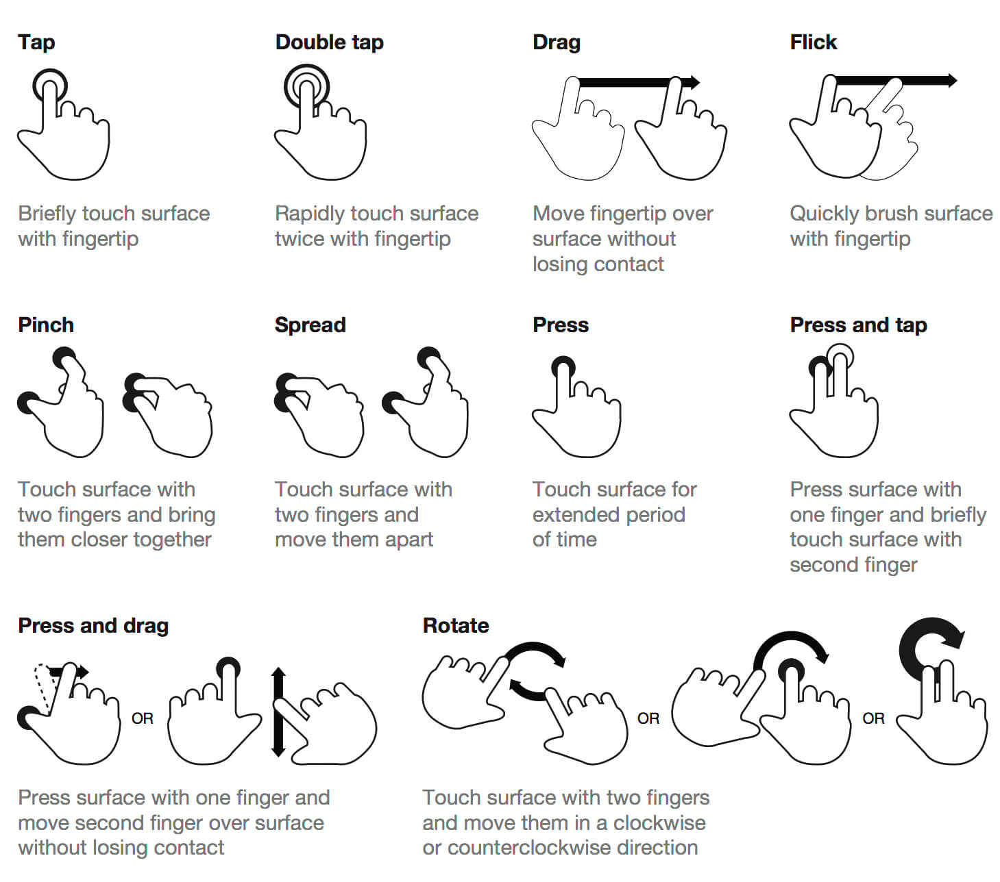

On this page
A gesture is a movement of the hand or body that a device understands as a command: a tap, a swipe, a pinch, a look and a pinch in mid-air. Gestures replaced buttons and menus with direct manipulation. You don't press "Zoom in", you spread the photo apart with your fingers.
That directness is their power and their problem. A button sits on the screen and tells you it exists. A gesture is invisible. Don Norman and Jakob Nielsen warned about this as early as 2010, in an essay called Gestural Interfaces: A Step Backward in Usability: gestures can be natural and fast, but only if people can discover them, remember them and predict what they will do.
The standard touch gestures

| Gesture | How | What people expect it to do |
|---|---|---|
| Tap | A quick touch with one finger | Select, open, press a button |
| Double tap | Two quick taps | Zoom in on a photo or map; "like" a post |
| Long press | Touch and hold | Show more options, a preview or a context menu; pick an item up |
| Scroll | Drag up or down | Move through content |
| Swipe | A quick horizontal or vertical movement | Move between pages or photos; reveal actions on a list item |
| Flick | A fast, short swipe | Scroll quickly with momentum |
| Drag | Touch, hold and move | Move an item, reorder a list, adjust a slider |
| Pinch | Bring two fingers together | Zoom out |
| Spread | Move two fingers apart | Zoom in |
| Rotate | Turn two fingers | Rotate an object, a photo or a map |
| Edge swipe | Swipe in from the edge of the screen | System actions: go back, go home, open notifications or Control Center |
The last row matters: the edges of the screen belong to the operating system. If your app uses edge swipes for its own features, it fights the system and people will trigger the wrong one.
Why gestures are tricky
- They are invisible. Nothing on screen shows that a list item can be swiped or a photo can be pinched. Nielsen Norman Group's mobile research found that people often never discover swipe actions, and even a one-time tip is soon forgotten.
- They have to be remembered. Unlike a labelled button, a gesture lives in the user's memory. The more custom gestures you add, the less likely people are to remember any of them.
- They can be ambiguous. If a sideways swipe deletes an email in one place and changes tab in another, people will make mistakes.
- They exclude some people. Two-finger gestures, precise drags and long presses are hard for people with tremors, limited dexterity, or one hand busy holding a coffee. Screen-reader users interact through different gestures altogether.
Design principles for gestures
- Use the standard gestures for their standard meanings. Pinch zooms, tap selects, swipe moves. Don't reinvent them (Nielsen's heuristic consistency and standards).
- Always offer a visible alternative. Every gesture-only action should also be reachable through a visible control: a button, a menu or an overflow "…". Gestures are the shortcut, not the only way (heuristic flexibility and efficiency of use).
- Add signifiers. Give hints that a gesture is possible: a card peeking in from the edge invites a swipe, a handle on a bottom sheet invites a drag, dots under a carousel show there is more.
- Give immediate feedback. The content should follow the finger in real time, and the end of a gesture should settle with a clear response, often a light haptic (see the Haptics lecture).
- Make it forgiving. Let people cancel a gesture halfway by moving back, and offer Undo after destructive swipes like delete or archive (heuristic user control and freedom).
- Make targets big enough. Apple recommends touch targets of at least 44 × 44 points; Google's Material Design recommends 48 × 48 dp. Leave space between targets so a thumb doesn't hit two at once.
- Design for thumbs. On a large phone held in one hand, the bottom of the screen is easiest to reach. Put frequent actions there, and keep destructive actions away from where thumbs rest.
- Avoid conflicts. Don't put a horizontal swipe inside a horizontally scrolling area, and stay clear of the system's edge gestures.
Gestures in spatial computing and VR

On a headset there is no screen to touch, so gestures move into the air:
- Apple Vision Pro combines the eyes and the hands. You look at an element to target it, then tap your thumb and index finger together (a pinch) to select it. Pinch and move drags; pinching with both hands and moving them apart zooms. Your hands can rest in your lap.
- Hand tracking in other headsets (and with controllers) adds direct gestures: pointing with a ray to select, grabbing objects to pick them up, pushing and pulling them, and throwing them.
- Social and expressive gestures, such as a wave or a thumbs up, are used in games and social apps to communicate with other people.
The same principles apply, only more so: spatial gestures are even less visible, tire the arms if used for long ("gorilla arm"), and need very clear feedback, because there is no physical surface to confirm a touch.
Gestures in the wild
- Pull to refresh: drag a feed down to reload it. Invented in the Tweetie app, it is now a standard almost everywhere.
- Swipe to archive or delete in mail apps, always paired with Undo.
- Swipe left or right to decide, as in dating apps: a gesture that became the whole product.
- Pinch to zoom on maps and photos.
- Long press an app icon for quick actions.
Why it matters for UX
Every gesture you add is a promise that people will discover it, remember it and perform it. Get it right and the interface feels effortless and physical; get it wrong and features stay hidden, mistakes go unnoticed and some users are locked out. Gestures sit right at the meeting point of usability, accessibility and delight.
Try it: a gesture audit (15 minutes)
- Choose an app you use every day and list every gesture it supports.
- For each one, ask: is there a visible signifier? Is there a visible alternative? What happens if I do it by mistake?
- Find one gesture you never knew existed. How could the design have told you about it?
- In your current project, list the gestures you plan to use, their visible alternatives and the feedback for each.
Media
Resources
Gestures – Apple Human Interface Guidelines
Mobile User Experience: Limitations and Strengths – Nielsen Norman Group
Contextual Menus – Nielsen Norman Group
Key takeaways
- Gestures feel direct, but they are invisible: people have to discover and remember them.
- Use standard gestures for their standard meanings, and give every gesture a visible alternative, a signifier, instant feedback and an undo.
- Size targets for real fingers (44 pt / 48 dp) and design for thumbs; in spatial computing, all of this matters even more.